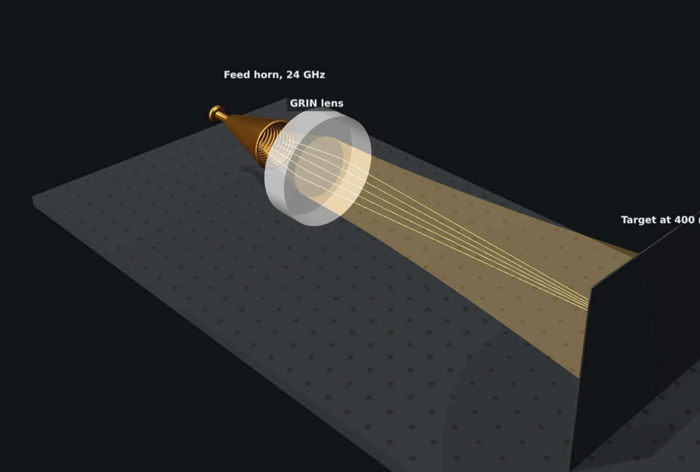

Custom RF Lenses
Price on quotation
Made to order to your design
Design the lens in JEKray, free in your browser. When its panel says it is manufacturable, press Request a quote for this lens and send the request from your quote cart.
Description
RF and millimetre-wave lenses made to order to your own design, for feed horns, radar sensors, links and test benches. You design the lens in JEKray, on the RF tab: a solid lens with the faces you choose, or a flat graded-index lens whose density, and so its index, falls from its centre to its edge. JEKray traces your horn's beam through it and shows what the lens does before it is made: its focal length, its loss, how well the beam fits it, and whether it can be made.
When it can, the lens panel's Request a quote for this lens button puts it in your quote cart with its figures and a link to the design. Send the request from the cart and we reply with a price and a lead time. The lens is made to that design and sent to you.
What can be made
- Solid lenses with spherical, conic or aspheric faces
- Flat graded-index lenses, ideal-lens or parabolic profile
- Up to 210 mm across and 260 mm thick, in one piece
- PLA, ABS, PETG, ASA or polypropylene
- Matching layers on the faces, to cut reflection at your frequency
- A mounting flange with bolt holes, made in one piece with the lens
- Gain, beamwidth and sidelobes with your horn, shown as you design
- Beam steering with an off-axis feed, with its scan loss
- The highest frequency each design holds to, and how closely it must be made
- One-off prototypes or small batches
- Your design stays yours, and is kept confidential
Typical applications
- 24 GHz radar and motion sensors
- 10 GHz links and amateur radio
- 60 to 77 GHz radar development (solid lenses)
- Feed-horn lenses for test ranges and antenna measurement
- Teaching labs in microwave and millimetre-wave optics
- Quasi-optical benches for radio astronomy instrumentation
Which band suits
| Band | Wavelength | Lenses |
|---|---|---|
| 10 GHz | 30 mm | Solid or graded-index. A lens up to 210 mm across is about seven wavelengths, so horns sit close and lenses are fast. |
| 24 GHz | 12.5 mm | Solid or graded-index. Ten or more wavelengths across: where these lenses work best. |
| 30 to 40 GHz | 10 to 7.5 mm | Solid, or graded-index over a narrower density range. |
| 60 to 100 GHz | 5 to 3 mm | Solid lenses. ABS and polypropylene lose least. |
Below about 6 GHz a lens of this size is too few wavelengths across to work well. Performance figures in JEKray are expected values, from your design and typical material properties.